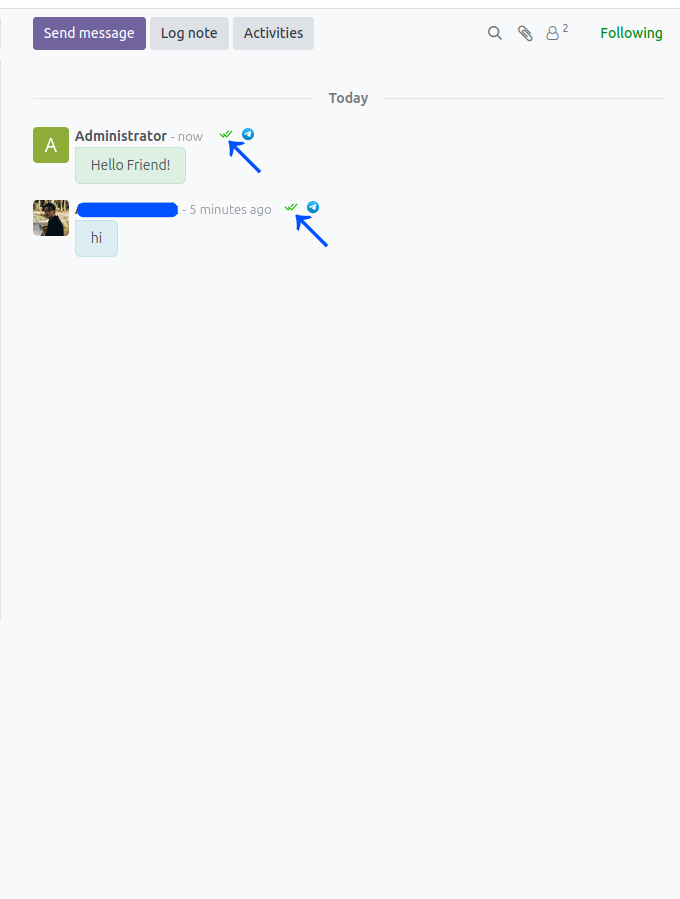
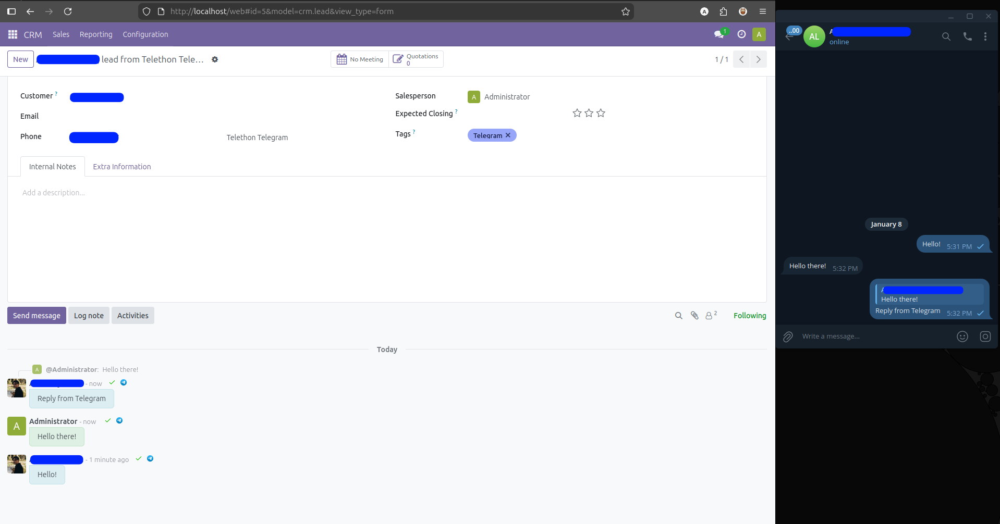
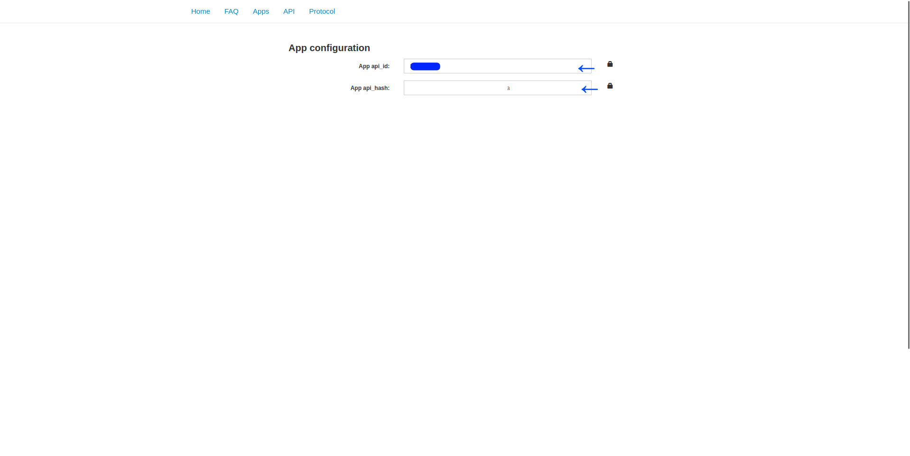
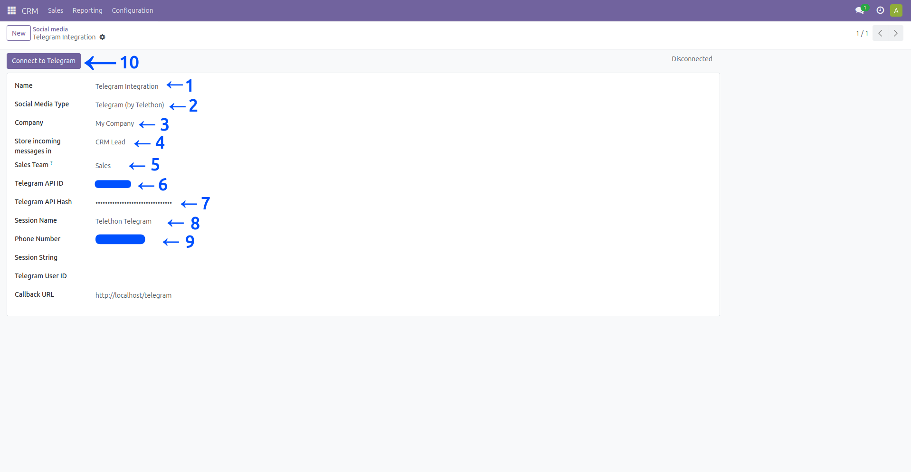
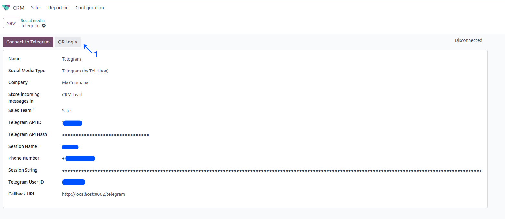
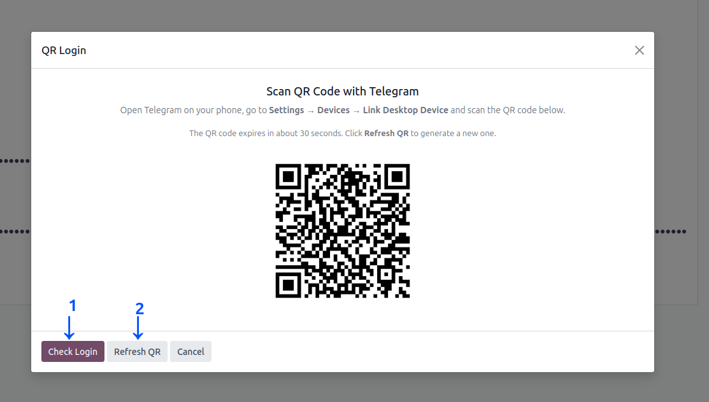
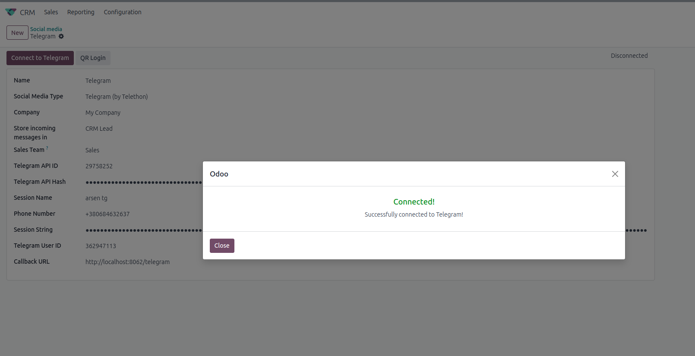

How It Works
Incoming Messages & Lead Creation
When a customer writes to your Telegram account, the module automatically creates a CRM lead (or Discuss channel), saves the contact with photo, and notifies the assigned manager in real time.

Unlike bot-based integrations, this module connects a real Telegram account (phone number) to Odoo. Your team handles Telegram conversations directly inside Odoo — all tied to CRM leads and Discuss channels.
Connect via QR code (scan from your phone) or classic Phone + SMS code. Both support accounts with 2FA enabled.
Every new conversation automatically creates a CRM lead with partner info, photo, and Telegram tags.
Track delivered and read status for every message, just like in the Telegram app.
Both incoming and outgoing messages appear in Odoo — even those sent from the Telegram phone or desktop app.
Reply to specific messages from Odoo — replies appear as proper threaded messages in Telegram.
Last-agent handling or round-robin distribution across your sales team, with manual reassignment support.
When a customer writes to your Telegram account, the module automatically creates a CRM lead (or Discuss channel), saves the contact with photo, and notifies the assigned manager in real time.

Send messages and files directly from the lead chatter or Discuss channel. Your replies appear in the customer's Telegram as regular messages from your account.
See when your messages are delivered and read, directly in the Odoo chatter. Stay informed about customer engagement without switching apps.


Reply-to support works both ways. Reply from Odoo to a specific Telegram message, or receive threaded replies from Telegram — context is always preserved.
Go to my.telegram.org, create an App, and copy your api_id and api_hash.

Navigate to CRM → Configuration → Social Media. Create a new record, select Telegram (by Telethon), fill in your credentials, and choose where to store messages.

Choose your preferred login method:
To log in into Telegram via QR please click the related QR Login button (1).

After the QR-Code is generated - scan it from your Phone Telegram App scanner.
After successful scanning press Check Login (1).
Important: QR-Code can become expired in about 30 seconds.
If there's anything wrong with it - press Refresh QR (2).

After pressing Check Login you will see actual information about your login attempt - "Connected" for example. You can safely close this window after that.

Currently one account per Odoo database. Multi-account support is not yet supported.
No. This module connects a real Telegram account (phone number), not a bot token. This allows receiving messages from any user, including private chats. For connecting Telegram Bots please check out our Telegram Bot Integration module.
Yes. Both QR code and Phone + SMS login methods handle accounts with 2FA enabled - you will be prompted for your cloud password during login.
Yes. All messages are synced - both messages received from customers and messages you send from the Telegram phone or desktop app appear in the Odoo chatter.
The connection resumes automatically. The session is stored in the database, so no re-login is needed after a server restart.
The module currently supports Odoo 17, Odoo 18, Odoo19.